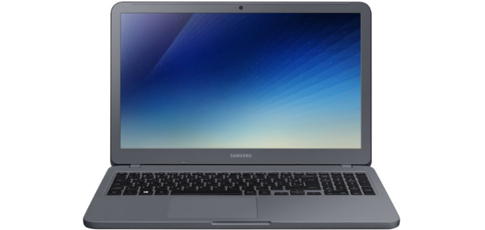
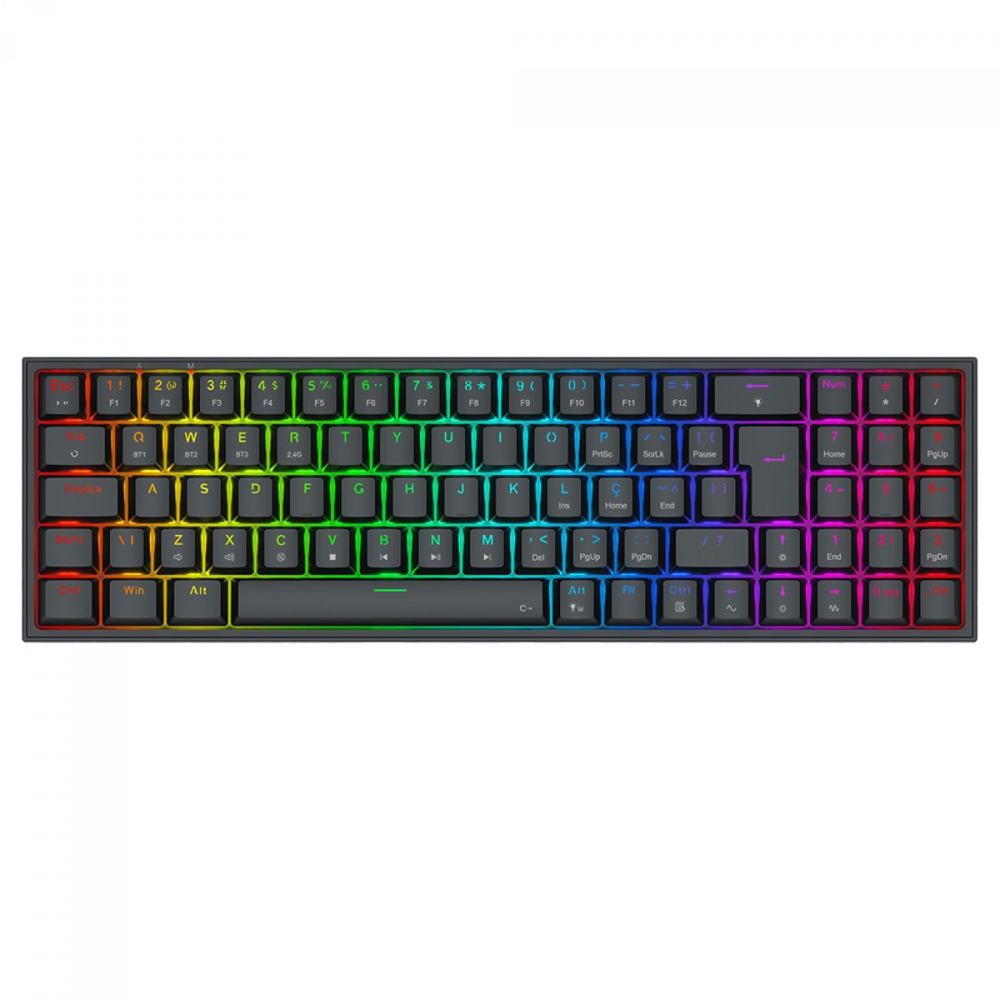
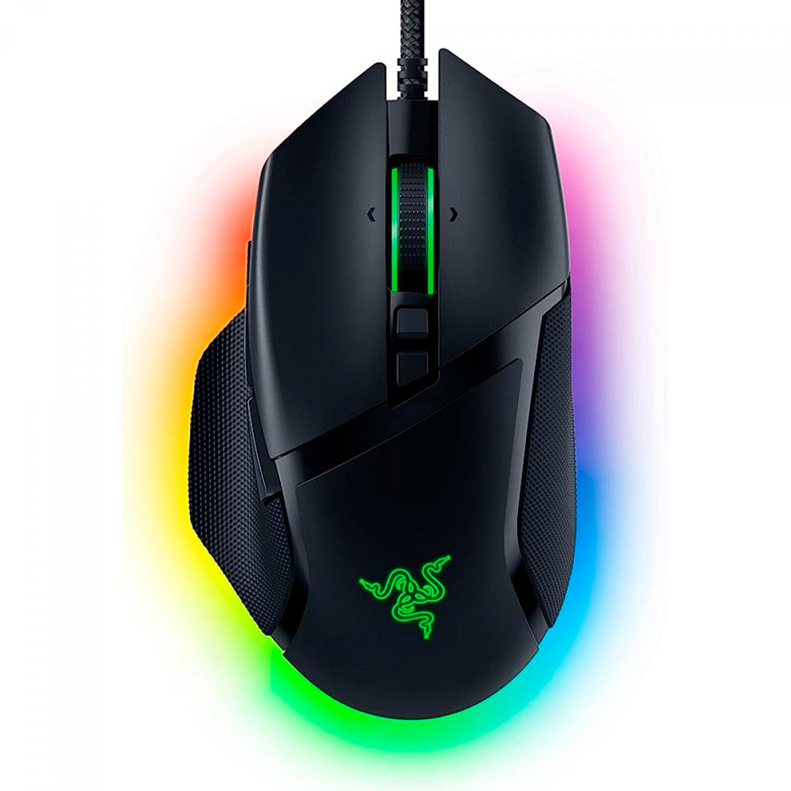

Os melhores produtos e soluções tecnológicas para a sua empresa
A TechInfo Informática é uma empresa especializada na venda de produtos tecnológicos e soluções digitais modernas. Atuamos no mercado oferecendo equipamentos de alta qualidade, suporte técnico especializado e atendimento personalizado para garantir a melhor experiência aos nossos clientes. Nosso objetivo é facilitar o acesso à tecnologia, proporcionando equipamentos confiáveis que atendam desde usuários iniciantes até profissionais que precisam de alto desempenho para trabalho, estudo e entretenimento.

Equipado com processadores modernos e placas gráficas dedicadas, o notebook gamer oferece excelente desempenho para jogos, edição de vídeos e desenvolvimento de softwares. Ideal para usuários que precisam de mobilidade sem abrir mão da performance e qualidade gráfica.

Desenvolvido para proporcionar conforto e precisão, o teclado mecânico possui teclas resistentes e resposta rápida, sendo perfeito para programadores e gamers. Seu design moderno melhora a experiência de uso durante longos períodos de digitação.

O mouse gamer oferece alta precisão e sensores avançados que garantem movimentos rápidos e eficientes durante jogos ou atividades profissionais. Conta com iluminação RGB personalizável e ergonomia pensada para conforto.
Além da venda de produtos, a TechInfo Informática oferece serviços completos de manutenção e suporte técnico. Nossa equipe é formada por profissionais qualificados que realizam diagnósticos rápidos e soluções eficientes. Trabalhamos com formatação de computadores, upgrades de hardware, instalação de softwares e consultoria tecnológica para empresas e usuários domésticos.